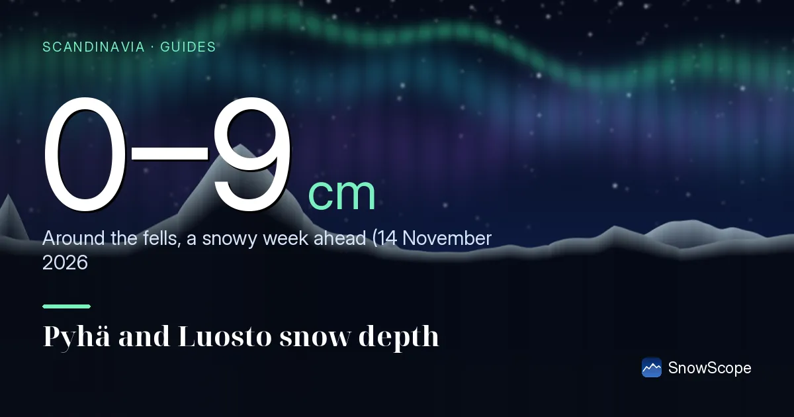

Pyhä and Luosto snow depth: 0 to 9 cm around the fells, a snowy week ahead (14 November 2026)
Early November snow at Pyhä-Luosto has been sparse and uneven. Nearby weather stations measured between 0 and 9 cm on 13 November, well short of the 15 cm that is typical for mid-November. The coming week brings a significant change: substantial snowfall is expected to build a proper base by the weekend.
See the live snow forecast for Pyhätunturi - Luosto in the SnowScope appSnow depth, powder alerts and the 3D map, free.

Where the snow is now
The picture across the region is fragmented. At Kemijärvi airport, 43 km away at 208 m elevation, the snow depth was 9 cm on 13 November. Savukoski kirkonkylä, 55 km south at 177 m, held 6 cm. Closer to the fells, Pelkosenniemi at 156 m (22 km away) had only 1 cm, and Sodankylä Tähtelä at 180 m recorded none at all.
The fells themselves likely hold slightly more snow than the low-lying villages, since they are higher and colder. Even so, the cover remains thin and discontinuous. Almost all of this snow fell weeks ago; fresh accumulation in the past week was negligible, less than 1 cm.

What happens in the next week
SnowScope forecasts about 23 cm of new snow over the seven days starting 13 November, with roughly 7 cm arriving in the first 48 hours. The fall will be steady and cold, with almost no rain at any height. Snow should reach ground level across the whole area.
Other weather forecasts that SnowScope compares with suggest 31 to 54 cm at the highest points of the fell over the same period. The spread reflects uncertainty, but all signals point to a substantial snow event rather than a light dusting.
How this compares to past winters
Past winters show that 15 cm on 14 November is the typical depth at this elevation. By 21 November, the median rises to 21 cm; by 30 November, 27 cm; and by 15 December, 37 cm. The record spans 46 winters from 1980–81 to 2025–26.
In one winter out of ten, only 3 cm lies on the ground by 14 November, so a slow early season is not rare. The deepest month is usually March, when depths reach a median of about 66 cm. Across a full winter, snow covers the ground for roughly 204 days.
What to expect on the fell
By the morning of 21 November, if the forecast holds, the landscape should look recognisably snowy. The base will still be thin enough that rocks and tussocks may show through in steep or exposed places, particularly on south-facing slopes. This is normal for mid-November in Finnish Lapland.
The snow that falls in the coming week will be relatively new and therefore lighter than settled winter snow. It will compact quickly under traffic, especially on the lower slopes where temperatures are closer to freezing.
Resort openings
Pyhä publishes its first opening period from 27 November 2026. Luosto targets 28 November. Both resorts supplement early-season snow with artificial snow production, so actual opening depends on weather as well as water and energy availability.
The National Park trails around the fells are steep and rocky in sections. Until the snow reaches 30 cm or deeper, good boots and gaiters are more practical than skis for exploring off-piste ground.
What to watch
Monitor the resorts' own websites and social media for precise opening announcements. Snow at Pyhä and Luosto can freeze hard after a cold night, creating good base conditions even with modest total depth. Early-season skiing here often rewards patience over crowds.
The snow forecast carries normal uncertainty; heavy snow forecasts can shift by a few days or change their total. If the week brings the forecast range of 23 to 54 cm across the fells, mid-season conditions will arrive several weeks ahead of the December average.
Tips for skiers
- Until the base reaches at least 30 cm, avoid steep boulder fields and rocky gullies. Rock strikes are more likely with thin snow. Stick to marked runs.
- Unfrozen bog and marsh ground can harbour water pockets under a thin snow crust. Stay on groomed trails until the snow pack settles and thickens.
- Pack gaiters, waterproof gloves, and goggles. Early-season snow is often wind-packed and can be hard on skin. Sun glare off white ground is intense even in November.
- Check avalanche forecasts before any off-piste venture. For conditions at Pyhä-Luosto, see the official European Avalanche Warning Services (EAWS) bulletin at avalanches.org.
- Watch the resorts' opening announcements closely, as start dates may shift by a few days depending on snow settling and cold overnight temperatures.
About these numbers
Resort snow depths are the deepest snow on the resort's upper slopes on the date shown; they are estimates for an area, not a measurement at one point. Forecasts can change. Always read the official avalanche bulletin before going off-piste.
Official avalanche bulletins: EAWS – European Avalanche Warning Services
Cite this report
For research, teaching or the press: the numbers and charts are free to reuse under CC BY 4.0 with this citation.
SnowScope (2026), Pyhä and Luosto snow depth: 0 to 9 cm around the fells, a snowy week ahead (14 November 2026), https://snowscope.app/blog/en/2026/11/pyha-luosto-snow-depth-14-november-2026.html, accessed 2026-11-14
SnowScope (Atlas Labs). (2026, November 14). Pyhä and Luosto snow depth: 0 to 9 cm around the fells, a snowy week ahead (14 November 2026). SnowScope snow reports. https://snowscope.app/blog/en/2026/11/pyha-luosto-snow-depth-14-november-2026.html
BibTeX
@misc{snowscope2026pyhaluostosnowdepth14nov,
author = {{SnowScope (Atlas Labs)}},
title = {Pyhä and Luosto snow depth: 0 to 9 cm around the fells, a snowy week ahead (14 November 2026)},
year = {2026},
month = nov,
howpublished = {\url{https://snowscope.app/blog/en/2026/11/pyha-luosto-snow-depth-14-november-2026.html}},
note = {Published 2026-11-14 15:29 UTC; accessed 2026-11-14}
}· CC BY 4.0 · Methods, data and tools →
Pyhätunturi - Luosto: snow and temperature by height, this winter vs last (tools) →
Follow Pyhätunturi - Luosto
Free: a message when fresh snow is coming, and the forecast every morning.
More snow reports

Tampere on 13 November 2026: 0 cm at Tottijärvi and at the stations around the city, 2 cm at Hyytiälä to the north-east. In half of past winters Tampere was white by 10 November. A trace of wet snow on Saturday.

Stockholm snow depth on 13 November 2026: 0 cm at Observatoriekullen and at every station around the city. When the snow usually arrives, and why this weekend will not bring it.

Stockholm has 0 cm of snow on 13 November. The nearest snow is 75 km away. Here are dog-friendly options in the city and when snow may arrive.